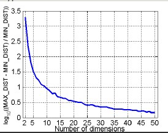
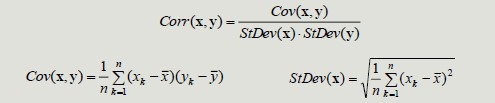
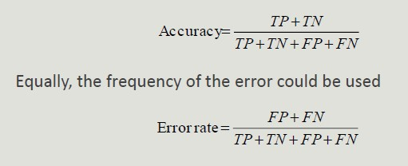
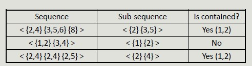
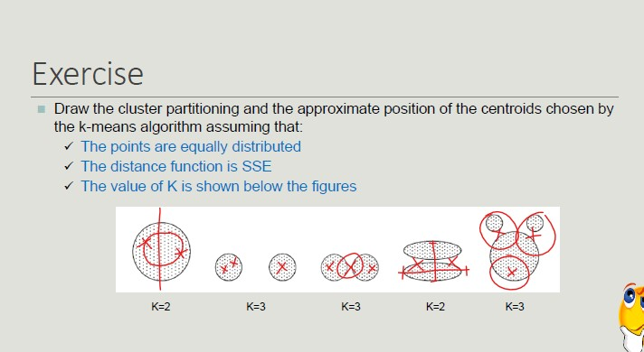
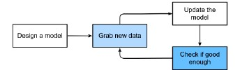
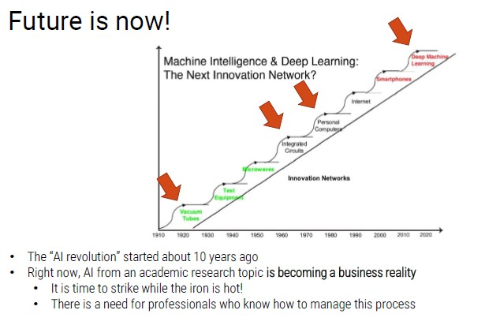
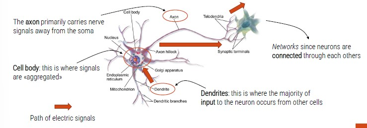
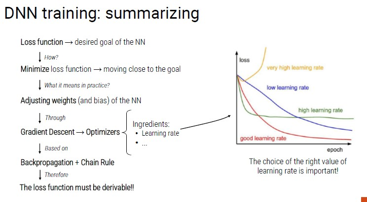

Data Mining and Machine Learning
Modules:
-
Data Mining: Prof. Golfarelli - 36h
- introduction to data mining
- Knowledge discovery process
- Understanding and preparing data
- Data mining techniques
- Data understanding and validation
- Weka software
- Case studies analysis
-
Machine Learning: Prof. Guido Borghi - 18h
- Introduction to AI
- Machine Learning and Deep Learning
- Data acquisition and Processing
- Model Training
- Metrics
- LIBRARIES:
- Scikit-learn (ML)
- Tensofrflow (DL)
Assessment Method - EXAM
The exam consists in an oral exam on all the subjects (80%) of the course and an elaborate (20% - agreed with the teacher).
The elaborate must be carried out in the Machine Learning module, choosing between:
- Study and algorithm among those in the literature
- Analysis of a data set with mining techniques
There are no fixed dates for the exam, it can be defined with teachers along the whole academic year. The two modules must be discussed within 15 days.
Data Mining
Data Mining
The amount of data stored on computer is constantly increasing, coming from:
- IoT data
- Social data
- Data on purchases
- Banking and credit card transaction
The first step is to collect data in a data set. This step can be automated through artificial intelligence increasing the analytical power.
From on side, data is more and more and on the other side, hardware becomes more powerful and cheaper each day.
At the same time, managers are more and more willing to rely on data analysis for their business decisions. The information resource is a precious asset to overcoming competitors.
Artificial Intelligence, Machine Learning and Data Mining
Although strongly interrelates, the term machine learning is formally distinct from the term Data Mining which indicates the computational process of pattern discovery in large datasets using machine learning methods, artificial intelligence, statistics and databases.
Data Mining - definition
Complex extraction of implicit, previously unknown and potentially useful data from the information. Exploration and analysis, using automated and semi-automatic systems, of large amounts of data in order to find significant patterns through statistics.
We do not just need to find results, but we need results to be USEFUL.
Analytics
Analytics refers to software used to discover, understand and share relevant pattern in data. Analytics are based on the concurrent use of statistics, machine learning and operational research techniques, often exploiting visualization techniques.
Prescriptive systems generate much value but it is extremely complex. Companies should start simple, adopting simple descriptive analytics solutions, and then move on. It is risky to skip intermediate steps.
BI adoption path
When we decide to digitalize a company, the adoption of BI solutions is incremental and rarely allows steps to be skipped. This is because it is risky, costly and useless to adopts advanced solutions before completely exploiting simple ones.
The goal is to create a data-driven company, where managers are supported by data.
- Decisions are based on quantitative rather than qualitative knowledge.
- Process and knowledge are an asset of the company and are not lost if managers change
The gap between a data-driven decision and a good decision is a good manager
Adopting a data-driven mindset goes far beyond adopting a business intelligence solution and entails:
- Create a data culture
- Change the mindset of managers
- Change processes
- Improve the quality of all the data
Digitalization is a journey that involves three main dimensions:
Pattern
A pattern is a synthetic representation rich in semantics of a set of data. It usually expresses a recurring pattern in data, but can also express an exceptional pattern.
A pattern must be:
- Valid on data with a certain degree of confidence
- It can be understood from the syntax and semantic point of view, so that the user can interpret it
- Previously unknown and potentially useful, so that users can take actions accordingly
When we distinguish between a manual technique (DW) and an automatic technique is the creation of a small subset of data which is rich in semantics.
The process begins with a huge multi-dimension cube of data, then grouping and selection techniques are adopted, creating a pattern.
Pattern types:
- Association rules (logical implications of the dataset)
- Classifiers (classify data according to a set of priori assigned classes)
- Decision trees (identify the causes that lead to an event, in order of importance)
- Clustering (group elements depending on their characteristics)
- Time series (detection of recurring or atypical patterns in complex data sequences)
Data Mining Applications
Predictive Systems
Exploit some features to predict the unknown values of other features (classification and regression).
Descriptive Systems
Find user-readable patterns that can be understood by human users (clustering, association rules, sequential pattern).
Classification - Definition
Given a record set, where each record is composed by a set of attributes (one of them represents the class of the record), find a model for the class attribute expressing the attribute value as a function of the remaining attributes.
Given a feature (defined at priori), define weather a user belongs to that feature
This model must work even when the record is not given. Unclassified record must be assigned to a class in the most accurate way.
A test set is used to determine the model accuracy.
Classification example
Direct Marketing: The goal is to reduce the cost of email marketing by defining the set of customers that, with the highest probability, will buy a new product.
Technique:
- Exploit the data collected during the launch of similar products
- We know which customers bought and which one did not
- {buy, not buy} = class attribute
- Collect all the available information about each customers
- Use such information as an input to train the model
Churn Detection Predict customers who are willing to go to a competitor.
Technique:
- Use the purchasing data of individual users to find the relevant attributes
- Label users as {loyal, not loyal}
- Find a pattern that defines loyalty
Clustering example
Given a set of points, each featuring set of attributes, and having a similarity measure between points, find subset of points such that: points belonging to a cluster are more similar to each other than those belonging to other clusters
Marketing Segmentation
The goal is to split customers into distinct subsets to target specific marketing activities.
Techniques:
- Gather information about customer lifestyle and geographic location
- Find clusters of similar customers
- Measure cluster quality by verifying whether the purchasing patterns of customers belonging to the same cluster are more similar to those of distinct clusters
Association Rules example
Given a set of records each consisting of multiple elements belonging to a given collection. It produces rules of dependence that predict the occurrence of one of the elements in the presence of others.
Marketing Sales Promotion Suppose you have discovered this association rule: {Bagels,...} -> {Potato chips*}
This information can be used to understand what actions to take to increase its sales.
Data Mining Bets
- Scalability
- Multidimensionality of data set
- Complexity and heterogeneity of the data
- Data quality
- Data properties
- Privacy keeping
- Processing in real-time
CRISP methodology
A data mining project requires a structured approach in order to choose the best algorithm.
CRISP-DM methodology is the most used technique. It is one of the most structured proposals to define the fundamental steps of a data mining project.
The six stages of the life cycle are not strictly sequential, indeed, it is often necessary.
- Business understanding (understand the application domain): understanding project goals from users' point of view, translate the user's problem into a data mining problem and define a project plan.
- Get an idea about the business domain and the data mining approach to adopt.
- Data understanding: preliminary data collection aimed at identifying quality problems and conducting preliminary analysis to identify the salient characteristics.
- Data preparation: tasks needed to create the final dataset, selecting attributes and records, transforming and cleaning data.
- Prepare the data for ML tasks (clean, complete missing data, create new features)
- Model creation: data mining techniques are applied to the dataset in order to identify what makes the model more accurate.
- Evaluation of model and results: the model obtained from the previous phase are analyzed to verify that they are sufficiently precise and robust to respond adequately to the user's objectives.
- Deployment: the built-in model and acquired knowledge must be made available to users.
- Change the software and processes to include new AI functionalities
Different classes of data mining use different algorithms so the evaluation changes accordingly.
Customer Retention
Customer retention, churn analysis, dropout analysis are synonyms for predictive analysis carried out by organizations and companies to avoid losing customers.
The idea is to create a different profile for customers who stay and customers who drop-out.
The Gym Case Study
They discovered that customers who did not train well, eventually drop out from the gym. Therefore, the goal was to model customers' training sessions in order to predict those who did not train well and prevent them from dropping out.
Steps:
- Customers have s list of exercises
- The system records the exercises (and repetition) did during the workout
- The system matches the exercises
- Train a classifier that is able to predict that someone is leaving the gym because he is unsatisfied
- The system update the profile each week
- Four weeks without training = dropout
- The idea of dropout needs to be defined properly (a customer who stops going to the gym in summer and comes back in summer is different from a customers who dropout and does not come back)
Practitioner who is about to leave the gym is training poorly. How can characterize the user behaviors? How long does it last?
Many KPIs can be adopted to assess the training session: in this case, two indicators were identified:
- Compliance (adherence of the performed workout)
- Regularity (regularity of the training sessions with reference to the prescribed one)
We still have a problem of granularity: we can assess regularity by checking steps, repetition, physical activity, muscle or body part.
Ended: Data Mining
Data Understanding
Data Understanding & Preparation
In data mining, data are composed of collections of objects described by a set of attributes (we refer to data that can be stored in a database).
Attribute: property characteristic of an object
Attribute types
In order to perform meaningful analysis, the characteristics of the attributes must be known. The attribute type tells us what properties are reflected in the value we use as a measure.
We can identify 4 types of attributes:
- Nominal-qualitative: different names of value (gender, zip code, ID)
- Ordinal-qualitative: values enables us to sort objects based on the value of attribute (grade)
- Interval-quantitative: the difference between the values has a meaning, with a unit of measurement (dates, temperature)
- Ratio-quantitative: the ratio of values has meaning (age, length, amount of money)
Further classifications
- Binary, discrete and continuous
- Discrete: finite number of infinite countable set of values
- Continuous: real values
Nominal and ordinal are typically discrete or binary, while interval and ratio attributes are continuous - Asymmetric attribute: only instances that take non-zero values are relevant - Documents and Texts: objects of the analysis described by a vector of terms - Transactions - Each record involves multiple items - Items come from a finite set - The number of items may vary from transaction to transaction - Ordered data
Explorative Analysis
First step in business and data understanding. It refers to the preliminary analysis of the data aimed at identify its main characteristics.
- It helps you choose the best tool for processing and analysis
STATISTICS OVERVIEW
Frequency
The frequency of an attribute value is the percentage of times that value appears in the data set.
Mode
The mode of an attribute is the value that appears most frequently in the data set.
Percentile
Given an ordinal or continuous attribute x and a number p between 0 and 100, the p-th percentile is the value of xp of x such that p% of the observed values for x are lower than xp.

Percentile visualization through boxplot enables the representation of a distribution of data. It can be used to compare multiple distributions when they have homogeneous magnitude.
Mean
The mean is the most common measure for locating a set of points.
- Subject to outliers
- It is preferred to use tee median or a 'controlled' mean
Median
The median is the term occupying the central place if the terms are odd; if the terms are even, the median is the arithmetic mean of the two central terms.
Range
Range is the difference between the minimum and maximum values taken by the attribute.
Variance and Standard Deviation
Variance and SD are the most common measures of dispersion of a data set.
- Sensitive to outliers since they are quadratically related to the concept of mean

Data Quality
The quality of the datasets profoundly affects the chances of finding meaningful patterns. The most frequent problems that deteriorate data quality are:
- Noise and outliers (objects with characteristics very different from all other objects in the data set)
- Missing values (not collecting the data is different from when the attribute is not applicable), how to handle them:
- Delete the objects that contain them
- Ignore missing values during analysis
- Manually/automatically fill the missing values
- ML can be applied to fill the missing values by inferring the other values of that attribute and calculate the most appropriate value
- Duplicated values (it may be necessary to introduce a data cleaning step in order to identify and eliminate redundancy)
Dataset Preprocessing
Rarely the dataset has the optimal characteristics to be best processed by machine learning algorithms. It is therefore necessary to put in place a series of actions to enable the algorithms of interest to function:
- Aggregation: combine two or more attributes into one attribute
- Sampling: main technique to select data
- Collecting and processing the entire dataset is too expensive and time consuming
- Simple Random Sampling (same probability of selecting each element)
- Stratified sampling (divides the data into multiple partitions and use simple random sampling on each partition)
- Before sampling a partitioning rule is applied (we inject knowledge about the domain)
- Allow the population to be balanced
- However, we are applying a distortion
- Sampling Cardinality: after choosing the sampling mode, it is necessary to fix the sample size in order to limit the loss of information
- Dimensionality reduction: the goal is to avoid the 'curse of dimensionality', reduce the amount of time and memory used by ML algorithms, simplify data visualization and eliminate irrelevant attributes and eliminate noise on data. Curse of dimensionality: as dimensionality increases, the data become progressively more sparse. Many clustering and classification algorithms deal with dimensionality and distances. All the elements become equi-distant from one another; the idea of selecting the right dimension to carry out analysis is crucial.

The curve indicates that the more we increase the number of dimensionality, the smaller the ratio is. In the modeling phase, it is important reduce dimensionality.
The goal is to reduce dimensionality and carry out analysis with the highest information amount.
- Principal Component Analysis: it is a projection method that transforms objects belonging to a p-dimensional space into a k-dimensional space in such way as to preserve maximum information in the initial dimension.
- Attribute creation: it is a way to reduce the dimensionality of data. The selection usually aims to eliminate redundant.
We can use different attribute selection techniques:
- Exhaustive approaches
- Non-exhaustive approaches
- Feature engineering (create new features): we have raw data and we can extract useful KPIs by designing new attributes.
-
Discretization and binarization: transformation of continuos-valued attributes to discrete-valued attributes. Discretization techniques can be unsupervised (do not exploit knowledge about the class to which elements belong) or supervised (exploit knowledge about the class to which the elements belong).
-
Unsupervised: equi-width, equi-frequency, K-means

-
Supervised: discretization intervals are positioned to maximize the 'purity' of the intervals
-
Entropy and Information Gain: it is the measure of uncertainty about the outcome of an experiment that can be modeled by a random variable x. The entropy of a certain event is zero.
The entropy of a discretization into n intervals depends on how pure each group.

Binarization: we start with a discrete attribute but we need it to be binary.
- Attribute transformation: function that maps the entire set of values of an attribute to a new set such that each value in the starting set corresponds to a unique value in the ending set.
Similarity and Dissimilarity
These two concepts are central in Machine Learning, as it is important to group clusters based on similarity and dissimilarity.
Some techniques are stronger with long distances while sometimes, by setting the wrong distance, we will incur in problems.
-
Similarity: it is a numerical measure expressing the degree of similarity between two objects
- Takes values in the range [0, 1]
-
Dissimilarity (distance): it is a numerical measure expressing the degree of difference between two objects
- Takes values in the range [0, 1] or [0, ]

Distance

Distance Properties
Given two objects p and q and a dissimilarity measure d():
- d(p,q) = 0 only if p=q
- d(p,q) = d(q,p) -> Symmetry
- d(p,r) + d(p,q) + d(q,r) -> Triangular inequality

Similarity Properties
Given two objects p and q and a similarity measure s():
- s(p,q) = 1 only if p=q
- s(p,q) = s(q,p) -> Symmetry
Binary Vector Similarities
It is common for attributes describing an object to contain only binary values.
- M01 = the number of attributes where p=0 and q=1
- M10 = the number of attributes where p=1 and q=0
- M00 = the number of attributes where p=0 and q=0
- M11 = the number of attributes where p=1 and q=1
Cosine Similarity
Like Jaccard's index. it does not consider 00 matches, but also allows non-binary vectors to be operated on.
Similarity with Heterogeneous Attributes
In the presence of heterogeneous attributes, it is necessary to compute the similarities separately and then combine them so that their result belongs to the range [0, 1]
Correlation
The correlation between pairs of objects described by attributes (binary or continuous) is a measure of the existence of a linear relationship between its attributes.


Ended: Data Understanding
Decision Tree
Decision Tree
It is one of the most widely used classification techniques. It is simple, it can be trained with a limited number of examples, it is understandable and works well with categorical attributes.
The usage of this model is characterized by a set of questions (yes/no), which build the tree. The idea is that the number of possible decision trees is exponential and we are looking for the best one (the one that creates the most accurate representation).
All the classification algorithms are systems that work in a multidimensional space ans try to find some regions that have the same types of object (belonging to the same class).

Learning the Model
Many algorithms are available, but we will use C4.5.
The Haunt's Algorithm It is a recursive approach that progressively subdivides a set of Dt records into purely pure record sets.
Procedure to follow:
- If Dt contains records belonging to the yj class only, then it is a lea node with label yj
- If Dt is an empty set, then t is a leaf node to which a parent node class is assigned
- If Dt contains records belonging to several classes, you choose an attribute and a split policy to partition the records into multiple subsets.
- Apply recursively the current procedure to each subset
TreeGrowth(E,F)
if StoppingCond(E,F) = TRUE then
leaf = CreateNode()
leaf.label = Classify(E) ;
return leaf;
else:
root = CreateNode();
root.test cond = FindBestSplit(E,F) ;
let V = {V | v is a possible outcome of root.test_cond}
for each v V do
E = {e | root.test cond(e)=v and e E}
child = TreeGrowth(E,F);
add child as descendant of root and label edge
end for
end if
return root;
end;
Characteristic Feature
Starting from the basic logic to completely define an algorithm for building decision trees, it is necessary to define:
- The split condition (depends on the type of attribute and on the number of splits)
- Nominal (N-ary split vs binary split)
- Ordinal (partitioning should not violate the order sorting)
- Continuous (the split condition can be expressed as a Boolean with N-ary split and as a binary comparison test with binary-split)
- Static (discretization takes place only once before applying the algorithm)
- DYnamic (discretization takes place at each recursion)
- The criterion defining the best split (it must allow you to determine more pure classes, using a measure of purity)
- The criterion for interrupting splitting (AND conditions, if one applies, the splitting stops)
- When all its records belong to the same class
- When all its records have similar values on all attributes
- When the number of records in the node is below a certain threshold
- When the selected criterion would not be statistically relevant
- Methods for evaluating the goodness of a decision tree
Metrics for Model Evaluation
Confusion Matrix evaluates the ability of a classifier based on the following indicators:
- TP (true positive)
- FN (false negative)
- FP (false positive)
- TN (true negative)
Accuracy is the most widely used metric to synthesize the information of a confusion matrix

- Accuracy Limitations
Accuracy is not an appropriate metric if the classes contain a very different number of records.
Precision and Recall are two metric used in applications where the correct classification of positive class records is more important
- Precision measures the fraction of record results actually positive among all those who were classified as such
- Recall measures the fraction of positive records correctly classified

F-measure is a metric that summarizes precision and recall
Cost-Based Evaluation Accuracy, precision, recall and F-measure classify an instance as positive if P(+,i) > P(-,i). They assume that FN and FP have the same weight, thus they are cost-intensive, but in many domains this is not true.
ROC Space (Receiver Operator Characteristics)
Roc graphs are two-dimensional graphs that depict relative tradeoffs between benefits (TP) and costs (FP) induced by a classifier. We distinguish between:
- Probabilistic classifiers return a score that is not necessarily a sensu strictu probability but represents the degree to which an object is a member of one particular class rather than another one
- Discrete classifier predicts only the classes to which a test object belongs
Classification Errors
- Training error: mistakes that are made on the training set
- Generalization error: errors made on the test set
- Underfitting: the model is too simple and does not allow a good classification or set training or test set
- Overfitting: the model is too complex, it allows a good classification of the training set, but a poor classification of the test set
- Due to noise (the boundaries of the areas are distorted)
- Due to the reduced size of the training set
How to handle overfitting
- Pre-pruning: stop splitting before you reach a deep tree. A node can not be split further if:
- Nodes does not contain instances
- All instances belong to the same class
- All attributes have the same values
- Post-pruning: run all possible splits to reduce the generalization error
Post-pruning is more effective but involves more computational cost. It is based on the evidence of the result of a complete tree.
Estimate Generalization Error
A decision tree should minimize the error on the real data set, unfortunately during construction, only the training set is available.
The methods for estimating the generalization error are:
- Optimistic approach
- Pessimistic approach
- Minimum Description Length (choose the model that minimizes the cost to describe a classification)
- Using the test set
Building the Test Set
- Holdout: use 2/3 of training records and 1/3 for validation
- Random subsampling: repeated execution of the holdout method in which the training dataset is randomly selected
- Cross validation: partition the records into separate k subdivisions, run the training on k-1 divisions and test the reminder, repeat the test k times and calculate the average accuracy
- Bootstrap: The extracted records are replaced and records that are excluded form the validation set. This method does not create a new dataset with more information, but it can stabilize the obtained results of the available dataset.
C4.5 (J48 on Weka)
This algorithm exploits the GainRatio approach. It manages continuous attributes by determining a split point dividing the range of values into two. It manages data with missed values and run post pruning of the created tree.
Ended: Decision Tree
Classifier Models
Rule-Based Classifier
The basic idea is to classify records using rule sets of the type "if .. then". The condition used with 'if' is called the antecedent while the predicted class of each rule is called the consequent.
A rule has the form: (condition) -> y
Building a model means identifying a set of rules
Coverage and Accuracy
We can have very accurate rules but with low coverage, which is not that relevant. Given a dataset D and a classification rule A -> y, we define:
- Coverage as the portion of records satisfying the antecedent of the rule
- Coverage = |A|/|D|
- Accuracy as the fraction that, by satisfying the antecedent, also satisfy the consequent
- Accuracy = |A y|/|A|
A set of rules R us said to be mutually exclusive if no pair of rules can be activated by the same record.
A set of rules R has exhaustive coverage if there is one rule for each combination of attribute values.
Properties
- It is not always possible to determine an exhaustive and mutually exclusive set of rules
- Lack of mutual exclusivity
- Lack of exhaustiveness
Rule Sorting Approach
- Rule-based sorting (individual rules are sort according to their quality)
- Class-based sorting (groups of rules that determine the same class appear consequently in the list)

Sequential Covering
set R =
for each class y Y 0 y k do
stop=FALSE;
while !stop do
r = Learn One Rule(E,A,y)
remove from E training records that are covered by r
If Quality(r,E ) < Threshold then
stop=TRUE;
else
R = R r // Add r at the bottom of the rule list
end while
end for
R = R {{} -> y k } // Add the default rule at the bottom of the rule list
PostPruning (R);

Dropping instances from Training Set
Deleting instances from the training set serves the purpose of:
- Properly classified instances: to avoid generating the same rule again and again, avoid overestimating the accuracy of the next rule
- Incorrectly classified instances: to avoid underestimating the accuracy of the next rule
Learn-One-Rule
We want something that is general (even with a lower accuracy). The goal of the algorithm is to find a rule that covers as many possible examples and as few as possible negative examples.
Rule are constructed by progressively considering a new possible predicate.
- In order to choose which predicate to add, a criterion is needed:
- n = number of instances covered by the rule
- nr = number of instances properly classified by the rule
- k = number of classes
Accuracy(r) = nr/n
Some metrics (like the FoilGrain) supports the rule by identifying the number of positive examples covered by the rule.
Stop Criterion: as soon as the rule is not relevant anymore, stop it.
Rule Pruning: it aims at simplifying rules to improve rule generalization error. It can be useful given that the construction approach is greedy.
example: remove the predicate whose removal results in the greatest improvement in error rate on the validation set
The RIPPER Method
It is an approach based on sequential covering for 2-class problem and it is used to choose one of the classes as a positive class and the other as a negative class.
The idea is to compute the description length (cost for transmitting the data set from one user to another) and if it exceeds the threshold, we should stop.

Instance-Based Classifier
These classifiers do not build models but classify new records based on their similarity to the examples in the training set.
They are called lazy-diligent learners as opposed to impatient learners (rule-based, decision trees).
K-Nearest Neighbor
K-Nearest Neighbor is a simple algorithm that stores all the available cases and classifies the new data or case based on a similarity measure.
It is mostly used to classify a data point based on how its neighbors are classified.
Requirements:
- A training set
- A metric to calculate the distance between records
- The value of k (the number of neighbors to be used)
The classification process calculates the distance to the records in the training set, it identifies k nearest neighbors and uses nearest neighbor class labels to determine the class of the unknown record.
The choice of k is important because:
- If k is too small, the approach is sensitive to noise
- If k is too large, the surround may include examples belonging to other classes
Remember to normalize attributes in pre-processing, because to operate correctly, they should have the same scale of values.
Pros of KNN:
- Do not require the construction of a model
- Compared with rule-based or decision tree systems, they allow the construction of nonlinear class (more flexible)
Cons of KNN:
- Require a similarity or distance measure to assess closeness
- Require a pre-processing step to normalize the range of variation of attributes
- Class is locally determined and therefore susceptible to data noise
- Very sensitive to the presence of irrelevant or related attributes that will distort distances between objects
- Classification cost can be high and depends linearly on the size of the training set in the absence of appropriate index structures
The R-Tree Index Structure
R-trees are extensions of B+-trees to multi-dimensional spaces:
- B+-trees organize objects into a set of non-overlapping one-dimensional intervals, applying this principle recursively from the leaves of the root
- R-trees organize objects into a set of overlapping multi-dimensional intervals, applying this principle recursively from the leaves to the root
Bayesian Classifier
It is a probabilistic approach to solving classification problems. In many applications, the relationship between attribute values and that of the class is not deterministic, due to noise data, hidden variables and difficulty in quantifying certain aspects.
- Uncertainty about the outcome prediction
Bayesian classifier model probabilistic relationships between attributes and the classification attribute.

Nave Bayes
The main advantage of probabilistic reasoning over logical reasoning lies in the possibility of arriving at rational descriptions even when there is not enough deterministic information about how the system works.
This classifier is robust toward irrelevant attributes.
It provide optimal results if:
- The conditional independence condition is met
- The probability distributions of P(X|Y) are known

13.5 is the solution that minimizes the error.
Probability with Continuous Attributes
In case attribute A is continuous, it is not possible to estimate probability for each of its values.
We need to discretize the attribute into intervals by creating an ordinal attribute. If too many intervals are used, the limited number of training set event per interval makes the prediction unreliable.
We associate the attributes with a density function and estimate the parameters of the function from the training set to estimate P(A|C).
Multi-Classifier
Construct multiple base classifiers and predict the class to which a record belongs by aggregating the classification obtained.
How to build a composite classifier
- Changing the training set by building more training set from the given one
- Change the attributes (random forest)
- Changing the classes considered (translate a multi-class classification into a binary one)
- Change the parameters of the learning algorithm
Error Decomposition
Classifiers make mistakes in predictions, due to:
- Bias: ability of the chosen classifier in modeling events and extending the prediction to events not in the training set
- Variance: capability of the training set in representing the actual data set
- Noise: non-determinism of the classes to be determined
Different types of classifiers have inherently different capabilities in modeling the edges of regions. The difference between the true separation line and the average separation line represents the classifier bias.
Bagging (variance)
Bagging allows the construction of compound classifiers that associate an event with the highest rated class from the base classifiers.
Each classifier is constructed by bootstrapping the same training set.
bootstrapping: any test or metric that uses random sampling with replacement
Bagging determines the behavior of a two-level decision tree.
Random Forest
It is a bagging method in which base classifiers are decision trees: For each node in the decision tree, the split attribute is chosen on a random subset of features rather than on the entire set of features.
Random forest performs two types of bagging: one on the training set and one on the feature set.
Boosting
An iterative approach to progressively adjust the composition of the training set in order to focus on incorrectly classified records.
- Initially, all N records have the same weight (1/N)
- Unlike bagging, the weights can change at the end of the boosting round in order to increase the probability of the record being selected in the training set
The final result is obtained by combining the result the predictions made by the different classifiers.
One of the most widely used boosting techniques is AdaBoost:
AdaBoost complex on the most complex part of the dataset.
Ended: Classifier Models
Association Rule
Association Rule
The idea of association rule is basket analysis. We have a set of transactions (set of elements coming from a huge set).
A classic example of association rule coming from data mining literature is the association {Diaper} -> {Beer}
Applications
- Marketing sales promotion (understand which products could be affected in the event that the store interrupted the sale of a specific product)
- Arrangement of goods (to identify the products bought together by a sufficiently large number of costumers)

Problem Formulation
Given a set of transactions T, you want to find all transactions such that:
- Support >= minsup
- Confidence >= minconf
Naive Approach:
- Lists all possible association rules
- For each rule calculates support and confidence
- Eliminate rules that do not meet thresholds for minsup and minconf
All rules are binary partitions of the same itemset: {Milk, Diaper, Beer} and rules based on the same itemset have the same support but they may have different confidence.
Searching association rules follow a two-steps approach:
- Generate frequent itemsets
- Rule generation (for each itemset, generate the rules with high confidence. Each rule is a binary partitioning of the elements in the itemset)
Frequent Itemsets Generation
Frequent itemsets can be identified following the apriori principle:
If an itemset is frequent, then all its sub-sets must be frequent too.
- The support of an itemset does not exceed the support of its subsets
- This is known as the anti-monotonic property of the support
A frequent itemset is maximal if no one of its adjacent superset is frequent. On the other hand, an itemset is closed if none if its adjacent superset has the same support.
Closed vs Maximal itemsets
From an efficiency point of view:
- They provide a more compact representation than frequent ones, which is relevant when space is an issue.
- Only closed itemsets determine a lossless compression of frequent patterns, which contain complete information regarding the frequent itemsets but closed itemsets are fewer in number than frequent itemsets.
- From the semantic point of view, maximal itemsets are the most complex while closed ones can be interesting if they are supported by groups with largely different support
Rule Generation
Given a frequent itemset L, find all the non-empty subsets f L such that f -> L - f that fulfills the minimum confidence constraint.
The confidence measure does not have the property of anti-monotonicity with respect to the overall associative rule. However, it is possible to take advantage of the anti-monotonicity of the confidence with respect to the left-hand side of the rule.
Interestingness
The objective measure is to prioritize rules based on statistical criteria calculated from data. The subjective measure is to prioritize rules based on user-defined criteria.
According to the latter, a patter is interesting if:
- It contradicts the users' expectations
- The user is interested in performing some activities or making decisions regarding its elements
Dataset Support
Inhomogeneous Support
Many datasets have itemsets with very high support along with others with very limited support. A large commerical chain sells products with price ranges from 1 to 10,000. The number of transactions that include products with low price is much higher than those with high price. However, the associations among them are of interest of the company.
Setting the minsup threshold fot these datasets can be very difficult.
Cross-support Pattern
A cross-support pattern is an itemset x = {i...1n} where the support ratio r(x) is lower than a threshold thr.
Confidence Limits
The case of cross-support patterns has shown the limits of support.
The confidence limitations is due to the fact that it does not consider the itemset support in the right.hand side of the rule and therefore, it does not provide a correct assessment in the case where the item groups are not stochastically independent.
The lift value of an association rule is the ratio of the confidence of the rule and the expected confidence of the rule.
Handling Categorical and Continuous Attributes
In its basic formulation, association rule works with binary and asymmetric variables.
Binarization is needed to transform categorical attributes into asymmetric binary attributes by introducing a new item for every possible attribute value.
Association rules that include attributes with continuous values are called quantitative association rules. Continuous attributes can be handled through several approaches:
- Based on discretization
- Based on statistics
- Without discretization
The discretization poses the problem of how to fix the number and the border ranges. The number of intervals is usually supplied by the users and can be expresses in terms of:
- Range of intervals (equi-distant discretization)
- Average number of transactions per interval (equi-depth discretization)
- Cluster number
The choice of the width of the intervals affects the value of support and confidence:
- Too large intervals reduce confidence
- Too narrow intervals reduce support and tend to determine replicated rules
One possible solution is to try all possible intervals (brute force).
Multi-level Association Rules
A hierarchy of concepts composed by generalization based on the semantics of its elements.
The higher the level, the higher the support, leading to generic rules.
Hierarchies of concepts are incorporated for the following reasons:
- Rules at the lower levels may not have sufficient support to appear in frequent itemsets
- Rules at lower levels may be too specific
Multi-level associative rules can be handled with the algorithms already studied by extending each transaction with the parent items of items in the transaction.
Adding details (skimmed milk, white bread) does not add any value and increases complexity.

Sequential Pattern
Often, temporal information is associated with transactions, allowing events concerning a specific subject to be linked together.
A sequence is an ordered list of elements, each of which contains a set of events (items). Each item is associated with a specific time instant or ordinal position.
The length of the sequence is given by the number of elements in it.
Sub-sequence
We have sequences (like ordered purchase list from the same customer) and sub-sequences are sequences contained in a sequence where the mapping respects the order.

The support of a sub-sequence w is defined as the fraction of sequences that contain w.
Mining Sequential Pattern
Given a database of sequences and a minimum support threshold, minsup find all subsequences whose support is >= minsup
Apriori Principle can be applied to sequential pattern mining since any sequence s that contains a particular k-sequence must contain all (k - 1) subsequences of s.
The steps to follow in this process, include:
- Run an initial scan of the sequence DB to locate all 1-sequence
- Repeat until new frequent sequences are discovered
- Candidate generation: find pairs of frequent subsequences found in step k-1 to generate candidate sequences containing k items
- Candidate pruning: eliminate k candidate sequences that contain (k-1) subsequences that are not frequent
- Support counting: scan the DB to find the support of candidate sequences
- Candidate elimination: eliminate candidate k-sequences whose support is actually less than minsup

Searching for sequential patterns is a difficult problem given the exponential number of subsequences contained in a sequence.
Temporal Constraints
Temporal constraints increase the expressiveness of sequential pattern by better defining their structure.
- MaxSpan defines the maximum time interval between the first and the last sequence element
- MinGap defines the minimum gap between events belonging to two different elements
- MaxGap defines the maximum gap between events belonging to two consecutive elements
Sequence Mining with Temporal Constraints
Temporal constraints impact on sequence supports as some patterns counted as frequent may not be true because some of the sequences in their support may violate a time constraint.
It is necessary to modify the counting technique to account for this problem.
The Time Window Size (ws) conversely relaxes the support basic definition as it specifies the interval within which two events occurring at different times should be considered simultaneous.
Outlier Detection
An anomaly is a pattern in the data that does not conform to expected behavior.
Anomalies can be caused by different aspects:
- Data from different classes (an object may be different because it belongs to different class).
- Natural variations (many phenomena can be modeled with probabilistic distributions in which there is a probability that a phenomenon with very different characteristics from others will occur).
- Measurement errors (due to human or device errors).
We can identify different types of anomalies:
- Spot anomaly (an individual data instance is anomalous with respect to data)
- Contextual anomaly (a single instance of data is anomalous within a context)
- Collective anomaly (a set of related instances is anomalous and requires a relationship between data instances)
Outliers application
Data from different classes, for example, can be used to identify a different purchase pattern followed by fraudsters who stole a credit card. Also, intrusion detection can be used to monitor events occurring in a computer system and analyze them for intrusion.
In the healthcare sector, outliers can be useful to detect abnormal data, disease outbreaks or instrumentation errors.
Finally, in the industrial sector, anomalies detection can be used to identify failures and malfunctions in complex industrial systems, intrusions in security systems, suspicious events in video surveillance and abnormal energy consumption.
Anomaly detection follows different approaches:
- Supervised anomaly detection, where labels are available for both normal and anomaly data.
- Semi-supervised anomaly detection, where labels are available for normal data.
- Unsupervised anomaly, where labels are not available and validation is complex since the real anomaly number is unknown.
Anomaly Detection Outputs
- Label, each test instance is assigned a label which is the outcome of classification-based approaches.
- Score, each test instance is assigned an anomaly score which allows the instance to be sorted
Anomalies are rare events which make it difficult to label these with high accuracy. Swamping is the error of labelling normal events as anomalies while masking is the error of labelling anomalous events as normal.
Ended: Association Rule
Clustering
Clustering
Clustering analysis aims at finding groups of objects such that objects that belong to the same group are more similar to each other than objects belonging to different groups.
CLustering is NOT supervised classification (it assumes classes to be known) or segmentation (partition rule is given) or querying a database (the selection and grouping criteria are given).
Types of clustering
We can distinguish between:
- Partitioning clustering: a division of objects into non-overlapping subsets (clusters), in which each object belongs exactly to a cluster.
- Hierarchical clustering: a set of nested clusters organized as a hierarchical tree.
- Exclusive vs non-exclusive: in non-exclusive clustering, points can belong to multiple clusters.
- Fuzzy vs non-fuzzy: in a fuzzy clustering a point belongs to all clusters with a weight between 0 and 1.
- Partial vs complete: in a partial clustering, some points may not belong to any of the clusters.
- Heterogeneous vs homogeneous: in a heterogenous cluster, clusters can have very different sizes, shapes and densities.
Similarly, we can identify different types of clusters:
- Well-separated clusters: each point in the cluster is closer (more similar) to any other point in the cluster than any other point that does not belong to the cluster.
- Center-based clusters: a point in the cluster is closer to the center of the cluster, rather than to the center of each other cluster.
- Cluster center = centroid
- Contiguous clusters (nearest neighbor): a point in a cluster is closer to one or more other points in the cluster than to any point not in the cluster.
- Density-based clusters: a cluster is a dense region of points, which is separated by low-density regions from other regions of high density.
- Conceptual clusters: clusters with shared properties or in which the shared property derives from the whole set of points.
K-means Clustering
Initial centroids are often chosen randomly (clusters produced vary from one run to another).

Converge and Optimality
There is only a finite number of ways to partition n records into k groups. So, there is only a finite number of possible configurations in which all the centers are centroids of the points they possess.
If there are K real clusters, the probability of choosing a centroid from each cluster is very limited.
Some solutions to this problem, include:
- Run the algorithm several times with different centroids.
- Perform a sampling of the points and use a hierarchical clustering to identify k initial centroids.
- Select more than k initial centroids and then select the ones to use from these.
- Use post-processing techniques to eliminate the identified erroneous cluster.
- Bisecting K-means (less affected by the problem).
Handling empty clusters
The K-means algorithm can determine empty clusters if, during the assignment phase, no element is assigned to a centroid.
In this case, different strategies can be used to identify an alternative centroid:
- Choose the item that most contributes to the value of SSE (sum of squared errors).
- Choose an item of the cluster with the highest SSE (the cluster will split into two clusters that include the closest elements).
Handling Outliers
The goodness of clustering can be negatively influenced by the presence of outliers that tend to shift the cluster centroids so that to reduce the increase in the SSE they determine.
Outliers, if identifies, can be eliminated during preprocessing.
Limits of K-means
The k-means algorithm does not achieve good results when natural clusters have:
- Different size (the value of SSE to the identification of centroids so as to have clusters of the same size if the clusters are not well-separates)
- Different density (more dense clusters lead to smaller intra-cluster distances, so less dense areas require more medians to minimize the total value of SSE)
- Non-globular shape (SSE is based on an Euclidean distance that does not take into account the shape of objects)
- Data contains outliers
Possible Solutions:
- Use a higher k value, thus identifying portions of clusters
- The definition of natural clusters then requires a technique to bring together the identified clusters
- Elbow method: execute k-means several times with increasing values for k
With the elbow method, in the beginning the error decreases but then, at some point, the curve will be flattened as we dropping some intra-clusters.
The natural number of clusters is located in the point in which we have the elbow.

Hierarchical Clustering
Hierarchical clustering produces a set of nested clusters organized as a hierarchical tree (it can be visualized as a dendrogram).
There are two approaches to build a hierarchical clustering:
- Agglomerative (start with the points as individual clusters and, at each step, merge the closest pair of clusters until only one cluster is left).
- Divisive (start with one, all-inclusive cluster and, at each step, split the cluster until each cluster contains an individual point).
The key operation is the computation of the proximity of two clusters. Different approaches to defining the distance between clusters distinguish the different algorithms.
Inter-cluster Distances
- MIN: minimum distance between two cluster points
- MAX: maximum distance between all cluster points
- Group Average: average distance between all the cluster points

Using MIN links, we can have non-globular clusters.

Having the MAX distance as reference distance, we will get more globular clusters and once they are put together, they cannot be split (greedy).
Computation Complexity
With hierarchical clustering:
- O(N^2) is the space occupied by the proximity matrix when the number of points is N.
- O(N^3), where N refers to the steps needed to build the dendrogram.
- At each step, the proximity matrix must be updated and read
- Prohibitive for large datasets
DBSCAN
DBSCAN is density based approach where density refers to the number of points within a specific radius.

A point is a score point if it has at least a specified number of points within Eps (points that are the interior of a cluster).
A border point is not a core point but is in the neighborhood of a core point.
A noise point is any point that is not a core point o a border point.
DBSCAN algorithm
// Input: Dataset D, MinPts, Eps
// Output: set of cluster C
Label points in D as core, border or noise
Drop all noise points
Assign to cluster c the core points with a distance > Eps from one of the other points assigned to the same cluster
Assign border points to one of the clusters the corresponding core points belong to
Pros and Cons of DBSCAN:
- Pros:
- Resistant to noise
- It can generate clusters with different shapes and sizes
- Cons:
- Data with high dimensionality
Cluster Validity
For supervised classification techniques, there are several measures to evaluate the validity of the results based on the comparison between the known labels of the test set and those calculated by the algorithm.
Validity Measures:
Numerical measures that are applied to judge various aspects of cluster validity, are classified into the following three types:
- Internal index (used to measure the goodness of a clustering structure without respect to external information)
- External index (used to measure the extent to which a cluster labels match externally supplied class labels)
- Relative index (used to compare two different clusters)
Internal Measures:
- Custer Cohesion (measures how closely related are objects in a cluster - SSE)
- Cluster Separation (measure how distinct or well-separated a cluster is from other clusters)

Validity can be measured via correlation:
- Two matrices are used
- Proximity Matrix
- Incidence Matrix
- Compute the correlation between the two matrices
- High correlation indicates that points that belong to the same clusters are close to each other
- Not a good measure for some density based clusters
- Correlation between the incidence matrix and the proximity matrix on the results of the k-means algorithm on two data sets
Cophenetic Distance
To define weather the measures obtained are good or bad, we need to define some KPIs obtained by comparing our results with the results obtained with random data.
We are looking for non-random patterns, so, the more atypical the result we get is, the more likely it is to represent a non-random pattern in the data.
The issue of interpreting the measure value is less pressing when comparing the results of two clustering.

External measures for clustering validation:
External information is usually the class labels of the objects on which clustering is performed. They allow you to measure the correspondence between the computed eticle of the cluster and the class label.
If class labels are available, we perform clustering to compare the results of different clustering techniques and evaluate the possibility of automatically obtaining an otherwise manual classification.
Two approaches are possible:
- Classification-oriented (evaluate the extent to which clusters contain objects belonging to the same class)
- Similarity-oriented (they measure how often two objects to the same cluster belong to the same class)
Ended: Clustering
Machine Learning
Introduction to Machine Learning
What are the main features of intelligence?
Intelligence is a very general mental capability that, among the other things, involves the ability to reason, plan, solve problems, think abstractly, comprehend complex ideas, learn quickly and learn from experience.
Artificial Intelligence is a huge set of disciplines which also includes machine learning. With machine learning, we refer only to a small subset inside artificial intelligence.

We, as humans, take many activities for granted that for machines would be very complex. Simulating human intelligence is extremely complex as our brain in an incredibly sophisticated machine, of which we still know few aspects.
Impact of AI in our world

For both graphs, we can note the exponential trend and the variety of continents covered.
Information is the oil of 21st century, and analytics is the combustion engine
The number of requests per position as data scientist is constantly increasing as companies need to extract knowledge from data to survive.
The revolution introduced by AI is reflected also in companies. At least 5 of the top 10 world companies are directly related to AI. Also, at least 2 companies are directly related to the production of chips, key elements for AI.
Nvidia
It is a software and fabless company that design GPUs, which nowadays are essential to:
- Create AI models
- Perform High Performance Computing (HPC)
Nvidia is the leading company in the sector and this is the reason why its shares has risen significantly in recent years.
The General Paradigm of Machine Learning
Machine Learning is a subset of the AI field that tries to develop systems able to automatically learn from specific examples (training data) and to generalize the knowledge on new samples (testing data) of the same domain.
From a practical point of view:
- We have some data which represents our application domain
- We implement an algorithm able to learn from the data (training phase)
- We use data to understand if the trained model has learned something -> model deployment
The main steps for the development of intelligent systems based on ML:

Data Acquisition
Data is the founding element of any application related to ML. Acquiring large amounts of data is one of the main concerns for top-companies today.
Data Processing
All those techniques with which data are processed in order to adapt them to the best of the ML model that we plan to develop.
Model
This is the main core of AI systems. A model can be seen as a set of mathematical and statistical technique able to learn from a certain distribution of data provided in input and to generalize on new data.
Prediction
It can take many forms depending on the application developed. It is the output of the model and it is important to evaluate the effectiveness of the developed system.
Historical Evolution of AI
To understand why AI is so important today, we have to analyze the past.
In 1950 the enthusiasm for AI began:
- Turing Test: "Can machines think?"
- 1954: one of the main experiments in machine translation
- 1955: Arthur Samuel wrote a program that could play checkers very well
- 1957: Rosenblatt invented perceptrons, a type of neural network
First AI Winter - promises of AI were exaggerated
In 1980 the Boom times occurred:
- Commercialization of new AI Expert Systems capable of reproducing human decision-making, through "if-then-else" rules
- Financial planning, medical diagnosis, geological exploration, and microelectronic circuit design
Second AI Winter - many tasks were too complicated for engineers
In 2012 the Deep Learning revolution took place
- Solved mathematical problems
- New powerful Neural Networks
- Huge improvement with the computational power
- Introduction of GPUs
Problem with data
- AI models need huge amount of training data
- Currently, we are able to:
- Acquire a lot of data (IoT)
- Store huge amount of data (improved storage)
Today, the question is not if we are able to collect data, but if we are able to use them.


Ended: Machine Learning
Data Acquisition and Processing
Data Acquisition and Processing
Data acquisition and processing are the first steps in the Machine Learning pipeline. This is one of the most important steps for many companies, but acquiring data is a time-consuming, investment and knowledge intensive process.
Big Data: having large amounts of data available has been one of the reasons for the strong development of machine learning. We are able to collect large amounts of data thanks to new storing devices and process digitalization.
Data Acquisition
Data acquisition is the first step in developing a machine learning system. We can get data mainly in two ways:
- By using publicly available data (quality must be checked)
- By acquiring a new set of specific data (generate specific expertise for the company)
- It is not certain that public data well represent the problem we want to solve
- We are forced to acquire data that, due to their sensitive nature, would not otherwise available (privacy issues)
- The company we work for already has a data collection process that we can use
Public Datasets
Many Universities publicly release their datasets. There are no requirements related to profit or non-disclosure agreement. It is a consolidated practice in the world of research to share data to test the reproducibility of the results obtained.
Acquisition of a new dataset
Acquiring a new dataset is usually a costly process (time and money).
- Program acquisition tool
- Handle large amounts of data
- Test to find bugs
- New hardware
It is necessary to carefully consider whether it is appropriate to acquire a new dataset.
Acquiring a new dataset does not mean acquiring only new data
Data Annotation
It is one of the most relevant aspect in the data acquisition phase. It regards the semantic content of the data and the label depends on the problem we want to solve.
It can be numerical or categorical and associates a label to data.
Data collection without correct and timely annotation is often useless. However, it also possible to extract knowledge from un-annotated data through clustering.
Data Annotation Process
The data annotation process can take place in several ways:
- Manual (long and expensive but the quality of the annotations is usually controllable and high)
- Automatic (each data is automatically annotated using specific tools)
- Third parties (all data is noted by a third party)
- Free of charge (free use of a platform in exchange for annotated data)
- Paid (purchase annotation time from third parties, usually from developing countries)
Closed Set: the pattern to be classified belongs to one of the known classes
Open Set: you do not know all the possible annotations, so the pattern to be classified can belong to one of the known classes or to non of these. You can define a threshold above which a specific pattern is assigned.
Problems in Data Acquisition
Companies usually face common problems:
- The business process produces huge amounts of data (it is impossible to acquire all the data due to physical limitation)
- Sometimes companies have a lot of old data in their databases
- In many business processes it is unclear understanding which data is possible to collect or which data is really useful for the business
Data Types
In general, there are 4 types of data:
- Numerical:
- Values associated with measurable characteristics
- Continuous (subject to ordering)
- Representable as numerical vectors
- Categorical:
- Qualitative characteristics
- Presence or absence of a characteristic
- Sometimes subject to sorting
- Widely used in Data Mining
- Sequences:
- Sequential patterns with spatial or temporal relationships
- With a variable length
- Position in the sequence and relationship with predecessors and successors are important
- Structured data:
- Outputs organized in complex structures such as trees and graphs
Images
An image is a matrix of values in which each cell is referred as pixel and each pixel contains the value of the brightness.

In color images, each pixel contains 3 values that represent the color components, referred as channels. The content of channels are related to the color space (the convention used to define colors).
- RGB color space: 3 values indicate the value of three components (Red, Gree and Blue).
Image formats
Data Preparation
Once obtained data for our Machine Learning system, it is necessary to prepare them.
They are organized as follows:
- Training set (data on which the model automatically learns during the learning phase)
- Validation set (part of the training set in which hyper-parameters are tuned)
- Training set (data on which the model is tested during testing phase in order to model effectiveness through qualitative and quantitative numerical measures)
Deployment
Once the previous phases have been completed, the ML system can be released for its effective use.
Normally, once the model is released, it no longer goes through training and testing phases.
Different ways to train-val-test
We can identify alternatives approaches adopted by choice or imposed by context:
- Batch: the training is carried out only once on a given training set.
- Incremental: following the initial training, further training sessions are possible
- Natural: this is the closest case ti the human learning process
Different Ways of Learning
Not all data is always annotated. Depending on whether they are annotated, we can define different types of learning:
- Annotated data -> Supervised Learning
- Not annotated data -> Unsupervised Learning
- Partially annotated data -> Semi-supervised Learning
Specific algorithms correspond to each of these areas. Usually, the presence of annotations helps and simplifies the development of ML algorithms. The best performances are usually obtained with supervised trained algorithms.
Ended: Data Acquisition and Processing
Model
Model
The model is the heart of the AI in our system. It is one of the most delicate and decisive elements of the entire process:
- Model -> mechanism with which input data are transformed in outputs
Machine Learning Tasks
There are different tasks in ML depending on the output we want:
- Classification
- Regression
- Clustering
Classification
- We have a specific input, a model (classifier) which outputs a class (pattern)
- If there are only 2 classes, we call the problem *binary* classification, while with multiple classes, we have *multi-class* classification
class = data set having common properties
The concept of label and semantic is related to the concept of class, since it strictly depends on the working context.
Examples of classification:
- Spam detection
- Input: email texts
- Output: yes/no (spam)
- Credit card fraud detection
- Input: list of bank operations
- Output: yes/no (fraud)
- Face recognition
- Input: images
- Output: identity
- Medical diagnosis
- Input: x-ray images
- Output: benign/malignant (tumor)

Regression
Given a specific input, the model (regressor) outputs a continuous value (data -> value). You can see a regression task as a classification task with a high number of classes
Examples of regression
- Estimation of a person's height based on weight
- Estimated sale prices of apartments in the real estate market
- Risk estimation for insurance companies
- Energy prediction produced by a photovoltaic system
- Health costs prediction models
Clustering
Identify groups (clusters) of data with similar characteristics, usually applied in an unsupervised learning setting (patterns are not labeled and classes are not known in advance).
Usually, the unsupervised nature of the problem makes it more complex than classification.
Examples of clustering
- Marketing (user groups)
- Genetics (group by DNA)
- Bioinformatics (partitioning of genes)
- Vision (unsupervised segmentation)
Artificial Vision
For artificial vision domain, we can identify even more specific problems

Pattern Recognition
Pattern recognition is the discipline that studies the recognition of patterns (data) even with pre-programmed algorithms (not able to learn automatically)
The model is a set of hand-crafted instructions.
Technique similar to the Expert System developed in the '80, which was a first form of artificial intelligence. The ability of a calculator to perform calculations on large amounts of data is exploited.
The programmer develops a series of instructions to solve specific problem:
- These instructions are typically based on if-then-else statements
- A strong priori knowledge of the problem is required
Problems that can be faced with explicitly programmed instructions:
- The conditions are stable and known a priori (constrained industrial environment)
- There are mathematical formulas to model the problem
- The problem must be limited in dimensionality and not too complex

Explicitly Programmed Instructions
General and technical considerations about pattern recognition:
- It can achieve a high degree of success if the a priori knowledge is adequate, dimensionality of the problem is limited and the test domain is similar to what was assumed when defining the instructions
- The developed solution will inevitably be specific
- There is not a real learning phase
- It is possible to understand why the developed system fails in classification
- If the problem becomes complicated, the programming time increase
- The code risks becoming unmanageable due to:
- High complexity and number of innested statements
- Length of code
- Too specific functions
Limits of programmed instructions
Solving these problems with instructions is very complex. The level of generalization of the proposed solution would be very limited.
It is necessary, when needed, to address the problems with other paradigms.
Ended: Model
Classification
Classification with Machine Learning
How can machine learn?
The key element is data: machine can learn from data. This is the reason why data is so relevant today.
Currently, we can program machines that imitate this way of learning of humans. Humans learn in many different ways and we only imitate just one with machines.
Learning from data is similar to humans that learn to paly a musical instrument:
- Observe how a chord is created (annotated data)
- Repeat the chord (iterative learning process)
- Feedback (loss function)
From a practical point of view, these are required steps:
- We get the annotated data
- We pre-process data (make them suitable for the algorithm)
- We iteratively train a classifier
- We measure the performance of the implemented solution
Machine Learning refers to the discipline that aims to develop systems able to automatically learn from (training) data and to generalize the knowledge on new (testing) data.
A machine learning model makes predictions without being explicitly programmed to do so.
Thanks to machine learning we can avoid complex operations of writing predefined instructions to solve a specific problem.
Support Vector Machines (SVMs)
It is a supervised learning method used for classification, regression and outliers' detection.
It is effective with high dimensional inputs and still effective in cases where number of dimensions is greater than the number of samples.

We have a point with two dimensions (x, y) and two patterns (orange and blue).
SVM identifies a pattern (hyperplanes) that divides the cluster in two groups.
Hyperplanes are decision surface, there can be infinite possible solutions but SVM finds the optimal one.
Support vectors: data points that lie closest to the decision surface
- Data points most difficult to classify
- Directly influence the optimum location of the decision surface
- They are the element of the training set that would change the position of the dividing hyperplane if removed
- SVMs maximize the margin between support vectors
- The decision functions is fully specified by a subset of training samples, the support vectors
- This becomes a quadratic programming problem that is easy to solve by standard methods
What if patterns are not linearly separable?
The idea is to still obtain a linear separation by mapping the data to a higher dimensional space. The mapping procedure is realized through a kernel function.
If we have more than two classes, we can adopt two solutions:
- One-Against-One: classifiers trained on all possible class couples
- One-Against-All: one SVM trained for each class (the SVM that has the better margin decides the final class)
Linear and Non-linear Kernel
- If the dimensionality of the space is very high, linear SVM is generally used
- Fow low dimensionality, the primary choice is non-linear SVM with RBF kernel
- For medium dimensionality both types are generally tried
Remember, the hyperparameter are calibrated on a separate validation set, or through cross validation.
Decision Trees
Tree-like model to perform the classification. They are commonly used in operational research, specifically in decision analysis.
If we add a class, we need to add another decision node.
Decision Tree Training
The root node:
- We want a decision that makes a good split (separating classes as much as possible)
- Quantify a good split by using a measure (Gini index, entropy ..)
- Different possible algorithms that recursively evaluate different features and use at each node the feature that best splits the data
The second node:
- Let's go the left branch
- We use only data that belong to the left branch
- We do the same thing we did in the root node
- We apply this procedure to all the other nodes
We stop the training when the selected measure is not further increased after some iterations.
Ensemble Methods
A multi-classifier is an approach where several classifiers are used together, wither in parallel or in cascade.
It has been shown the use of combinations of classifiers can strongly improve performance. The combination is effective only when individual classifiers are independent. Unfortunately, it is very difficult to have real independence between classifiers.
Two approaches:
- Bagging: I train different classification algorithms on different portions of the training set
- Boosting: I train different algorithms on incorrectly classified patterns
How to merge decisions of the individual classifiers:
-
Decision level
- Majority vote rule (each classifier vote for a class and the pattern is assigned to the highest rated class)
- Borda count (each classifier produces a ranking of the classes, the rankings are converted into scores and the class with the highest final score is the one chosen)
-
Confidence Level
- Each classifier outputs a confidence value, and these values are merged
- Weighted sum (the sum of the confidence values is performed by weighting the different classifiers according to their degree of skill)
- The sum is often preferable to the product as it is more robust (in the product it is sufficient that a single classifier indicates zero confidence to bring the confidence of the multi classifier to zero)
Random Forest - based on Bagging
The single classifier on which random forest is based is the decision tree (hundreds or thousands of DT).
In random forests, we have two types of bagging:
- Data Bagging (RF repeatedly selects a random sample with replacement of the training set and fits trees to these samples)
- Feature bagging (in each decision node, the choice of the best feature on which to partition is not made on the entire set of d feature)
The final decision is taken upon the majority vote rule.
Adaboost - based on boosting
Several weak classifiers are combined together to obtain a strong classifier. Differently from bagging, there is an incremental learning phase, at each step a weak classifier is added.
Feature Description
The learning phase is complex with high-dimensionality data as images. For instance, what if in input we have RGB images?
Feature extraction refers to the process ot extracting features from data. A feature is a n-dimensional vector of numerical features that represent (in a discriminative way) some object used as input data.
Example of features:
Object: geometric shape
- Data: array of values
- Features: subset of coordinates or a new value that we can compute from coordinates
Object: image
- Data: matrix of values
- Features: subset of pixels or a new value that we can compute from pixels
Histogram of Oriented Gradients (HOG)
A visual feature descriptor that can describe the shape of an object. HOG provides the edge direction:
- The whole image is divided into smaller regions
- For each region, the edge directions are calculated
- Edge: curves at which the brightness changes sharply
- Direction: angle and magnitude of edges
Local Binary Pattern (LBP)
A visual feature descriptor that can describe the texture of the surface (visual surface appearance).
Metrics
The prediction of the system is an extremely important step. It allows you to calculate the performance of the system through metrics, to understand if the system responds correctly with respect to what was designed and desired.
The computation of metrics is also linked to the achievement of certain contractual obligations.
System Performance with Classification
Generally, it is preferred to use a measure linked directly to the semantics of the problem. The metric examines the prediction of the model and the label provided in input (GroundTruth and prediction).
Accuracy = # pattern correctly classified / total patterns
Confusion Matrix
The confusion matrix is very useful in multi-class classification problems to understand how errors are distributed.
- Rows: classes of GT
- Columns: predicted classes
A cell (r,c) shows the percentage in which the system predicts class c for a ground truth class r.
Ideally, the matrix should be diagonal and high values (off diagonal) indicate concentrations of errors.
In the example, the class "0" is often confused with "6".
Classification with Deep Learning
Deep learning is a discipline, similar to ML, that allows you to avoid the problematic phase of feature extraction with high-dimensional input.
Is is based on neural networks (NNs) classifier. The key idea is to imitate, as far as possible, he nature (neurons in the human brain).

The first Artificial Neuron has been introduced in 1943 by McCulloch and Pitts. In artificial neuron, there are:
- Inputs (digital numbers)
- Inputs are weighted (not all inputs are equally important)
- Inputs are merged with a sum function (plus a bias)
- An activation function is used to generate the final output
Activation Function
The activation function defines the output of that node given an input or set of inputs. They are a sort of switch of the artificial neuron; they output a small value for small inputs and a larger value if its inputs exceed a threshold.
Liner vs Non-linear problems
A single artificial neuron can solve only linear problems.
The solution is to use more ANs organized on different layers (Multi Layer Perceptron). It is not easy as it introduces several mathematical problems, besides, we greatly improve the computational load.
Artificial Neural Networks
Groups of artificial neurons are organized in different layers: neural networks.
Typically, they present:
- An input layer (input of the network)
- An output layer (output of the network)
- One or more hidden layers
Each neuron is fully connected with those of the next level. Again, we try to imitate the hierarchical nature of our neurons:
- We have only ten levels between the retina and the actuator muscles.
- Otherwise, we would be too slow to react to stimuli.
ANN Typologies
- Feedforward (FF): the connections connect the neurons if one level with the neurons of the next level.
- Connections to the same level and backward connections are not allowed.
- It is by far the most used type of network.
- Recurrent: feedback connections are expected (towards neurons of the same level but also backward).
- More suitable for the management of sequences because they have a short-term memory effect
Neural Networks Training
General considerations about NN layers:
- Greater number of hidden layers (and neurons) -> better performance
- Greater number of hidden layers (and neurons) -> need for more training data
- Greater number of hidden layers (and neurons) -> greater computational load
How is it possible to train a neural network?
Training a neural network is extremely complicated, but we can use specific frameworks:
- PyTorch
- TensorFlow
- Mxnet
Inside the neural network, we can change the weights applied to each input.
Training a NN means minimizing the loss function. The cost function:
- It is a mathematical formulation of the learning goal
- It measures the error between the prediction and the ground truth
- Presents the performance in the form of a single real number

How to minimize the loss? -> adjusting the weights and the bias of every neuron
We can change weights and bias following gradients (the derivative of a function measures the sensitivity to change of the function value with respect to a change in its argument).
We can minimize the loss function with a gradient descent approach that adjust weights in the following manner:


Convolutional Neural Networks
CNNs are particular Neural Networks specifically designed to process images. Instead of using a flat structure, it arranges neurons on three dimensions.

How is it possible to connect a 3D input with a kernel?
To do so, we need a mathematical operation called convolution. The convolution is the core building block of convolutional neural networks.
Each kernel is convolved with the input volume thus producing a 2D feature map. With this process, one feature map for each kernel is produced.
We usually have more than one kernel as output is usually larger than 1. The output volume is then made up by stacking together all activation maps produced on the top of the other.
CNN Architecture
In multi-layers architecture we have a flat structure with different layers.
With CNN, we have a bunch of layers stacked one on the top of the other:
Differently from HOG, CNN automatically learn how to extract features, so there is no need to specify parameters.
Convolutional layers learn to extract various types of visual information in a hierarchical manner:
- In the layers close to the input, CNNs learn filters to extract 'simple' visual information.
- In the layers placed in depth, the filters extract semantically complex visual information.
The interesting thing is that this mechanism seems similar to what happens in our brain, where the visual cortex processes information by different layers.
Pooling Layer
Pooling layers spatially subsample the input volume (reduce the input size). They are widely used for a number of reasons:
- Gain robustness to exact location of the features
- Reduce computational cost
- Help preventing over-fitting
- Increase receptive field of following layers
Other Layers
Activation layer: activation function used with neural networks.
Flatten layer: usually exploited to connect the 3D feature extractor to the 1D classifier (like MLP wih unrolled img).
It is possible to build a personalized architecture but it is very complex so, we will use already implemented ones:
- AlexNet
- ResNet
- VGG
Train CNNs
CNNs can be trained in different ways:

Machine Learning vs Deep Learning

The superiority of DL approaches compared to other ML algorithms manifests itself when large (huge) quantities of training data are available.
The training of neural networks requires a specialized hardware:
- Before starting a project with DL, you need to ask if the company / lab has the necessary hardware
- Having one or more GPU available is a fundamental factor today (GPU are essential for parallelizing calculations)
- The deeper a network is, the more computational load is introduced
Hardware purchase for DL
With in-house solutions, the company buys the necessary hardware and is the direct owner:
- Pros:
- Extreme freedom of use of hardware
- In the long run, it tends to have lower costs
- Cons:
- Hardware maintenance is required (specialized technicians)
- Hardware ages quickly
- For large number of GPUs -> specific server rooms (with high energy consumption)
- The GPU market is quite expensive and volatile
With external solutions, the hardware is rented through the PaaS paradigm (Cloud).
- Pros:
- Hardware maintenance is not required
- No investment over time is required for hardware upgrades
- Dedicated server rooms are not required, energy consumption is not borne by the company
- Cons:
- In the long run, it tends to have higher costs
- Vendor lock-in
- We do not really know who the owner of the data is
- Privacy issues

Ended: Classification
DM - LAB
Weka
Weka is an open-source software for Data Mining and Machine Learning written in Java, distributed under the GNU public license.
It includes four applications:
- Explorer - we will use explorer
- Experimenter
- Knowledge Flow
- SimpleCLI
The main file format used in Weka is ARFF (attribute-relation file format), which is a comma-separated value format.
Weka files store relations, attributes and values.
@attribute age numeric
@attribute sex {female, male}
@attribute cholesterol numeric
@data
63, male,233
67,male,286
Bank Data
Attributes:

PEP class (Personal Equity Plan)
Pre-Processing Bank Data
- Load the files and save it in an ARFF format
- Carry out a visual analysis of the dataset
- Drop the ID attribute
Which attribute is more relevant for our analysis?
- Sex (no relevant difference)
- Age (not as relevant as income, but there is a trend)
- Married (relevant)
-
Children (linear correlation, the first column does not respect the trend)
-
Income (normal distribution)
- The higher the income, the higher the probability to buy PEP

Visualize the Plot Matrix

The higher the number of children, the lower the income as children cost a lot of money.
People without children are not interested in PEP as they do not need to think about the future.
Classify
Use the following algorithms and evaluate the result:
- J48
- J48 (without post-pruning)
- Jrip
- IBk (with k=1 and k=5)

The main variables are children and income (closest to the root).
KNN with k = 1 using the training set has an accuracy of 100% because the closest point to me is me (if given), so we drop it.
With IBk we are using a distance function so numbers should be discretized.
Also, irrelevant and replicated attributes can create distortion in the result. - In this case, irrelevant attributes are most likely (sex, car)
We can drop the irrelevant attributes to increase accuracy.
Census Data
Identify relevant attributes:
- Capital gain/loss are not relevant because many attributes are zero
- Age (we expect it to be linear but the majority of >50k is in the range of 40 years)
- Work class is unbalanced (the majority of people works in private), coverage is very low
- Education number
- Marital status (interesting, married is different)
- Occupation (interesting)
Education and education-num are perfectly correlated (it is duplicated).
We can enhance accuracy by replacing missing values:
Preprocess - filter - unsupervised - attribute - replacemissingvalues
Apriori Algorithm
We apply discretization and perform a manual analysis of the data in order to identify any correlation between pairs of attributes.
Clustering with Weka
During the pre-processing part, the first thing to to do is to normalize the dataset (unsupervised filter) because clustering algorithms need a distance measure.
Then, we need to select the K-Means parameters:
- DisplayStDev: shows the standard deviation of the distances of individual points from the cluster center. The measure is reported separately for each attribute.
- Distance Function: distance function used in the calculation
- Maxiteration: maximum number of iterations to achieve convergence
- NumCluster: value of k
- Seed: random value for choosing the initial
We set the number of cluster at 3:
If we try with two clusters, the squared error is high (12.34), while with 4 clusters, the squared error is about 5.

By running the analysis with class to cluster evaluation, clusters are created based on their size.
We can improving the model by running the system in a two-dimensional space, selecting the two clusters with the lowest standard deviation.
Food Nutrient Dataset
The dataset is composed by 25 foods with their nutritional information based on the following KPIs:
- Energy
- Protein
- Fat
- Calcium
- Iron
The goal is to distinguish, based on the data, which ones are meat and which ones are fish.
We run the cluster analysis using k-means:

With two clusters, we can easily distinguish which cluster regards meat and which one is for fish.
With three clusters, C0 remains unchanged while characterization between C1 and C2 is relevant only for proteins.
Ended: DM - LAB
ML - LAB
Laboratory
- Programing done in Python
- We will use Colab as a programming tool
- We can use any IDE (Visual Studio, PyCharm)
Guide
- Do not execute code without understanding it
- It is necessary to play a lot with the code to become familiar
- Bugs can be very informative
Colab
- Free Google service
- Easy to use, the environment provided already has most of the resources installed
- The code runs in the browser (VM)
- Each assigned virtual machine has a variable hardware equipment
- CPU and RAM available
- GPU resources
Ended: ML - LAB
ML - Seminar
AI Solutions for Real-World Business
Presented by: Cosimo Fiorino - Head of Data Science
c.fiorini@ammagamma.com
The team of Ammagamma is various, composed not only by engineers, but also philosophers and designers.
Their vision is to develop a society aware of the potentialities, implications and impacts of technology.
As a mission, they offer the best choice instruments through the development of artificial intelligence innovative solutions.
They master cutting-edge technology to make company processes easier, curating the whole life cycle.
AI solutions implemented:
- Scheduling and optimized planning of production and organizational processes
- API for the forecast of future trends and historic series
- Data enrichment for the optimization of advanced analytics solutions
- Warehouse forecasting and replenishment for the predictive management of the warehouse
- Georouting API engine for the optimized planning of complex and bound scenarios
- Intelligent document processing platform enabling classification and extraction of the information
Shared Knowledge in the AI World
They develop educational projects in the intersection between the culture of data and humanistic thought, to lead people to the discovery of new growth frontiers.
Also, they devise new innovation paths that create a long-term value for the community and the territory.
We use numbers to transform chaotic systems into organized, intuitive and verifiable models
- Descriptive Algorithms: description of the variables that characterize a phenomenon to create its mathematical model (clustering, market basket analysis, BI systems)
- Predictive Algorithms: Information analysis to predict and control future behaviors of the phenomena (forecasting, regression, classification)
- Prescriptive ALgorithms: Development of prescriptive formulas to support and guide the process management (optimization, optimal control, next best action)
AI Projects Development
- Define the objectives and the context
- Feasibility analysis and solution design
- Proof od concept
- Pilot
- Deploy
- Scale up
- Post go-live and monitoring
What can go wrong?
DATA:
- Quality
- Null values
- Legal problems
- Security
- Dimension
COMPLEXITY AND BUSINESS CONSTRAINTS:
Constraints related to third parties in the business.
ADOPTION:
In the post deployment phase, the innovation department develop innovative solutions and then the department will not use it because they are skeptical.
Design Thinking
An approach to innovation that studies the adoption of a creative view to solve complex problems.
Make sure that when you build a model you will be able to reproduce it in the future and maintain it properly.
Data Ethic
Demand Forecasting & Inventory Optimization
In the food processing sector for the supply process of canteens, restaurants and indirect channels, it is extremely important to estimate the food products that will be sold to ease the order of raw materials necessary for production.
The target is to improve demand forecasting accuracy, reduce total stock level in the warehouse and reduce the total amount of wasted food.
Solutions:
- Demand forecasting algorithms adaptable to market movements and new products quickly
- Optimization models which, according to the predicted demand, suggest the best list of products
Marketing Management Optimization
Difficulty in managing and synchronizing the multiple campaigns aimed at costumer up / cross selling, retention and / or acquisition.
The approach, typical of product-centric strategies and dictated by objectives that are imposed on individual campaigns without considering the synergistic interaction between generating excessive push communication on the customer.
Recommender Systems
The goal is to find the perfect match between customers and products in order to suggest the right product at the right moment.
Item-based filtering
I suggest you product x because it is similar to the product you bought. The implementation needs a vectorial representation of each product in order to evaluate their similarity.
Collaborative filtering
I suggest you product x because people similar to you have chosen it. The implementation needs a vectorial representation of each customer in order to evaluate their similarity.
Popularity filtering
I suggest you product x because it is popular right now.
Serendipity effect
Serendipity is an unplanned fortunate discovery.
Hybrid filtering
When I have a lot of information I can use a combination of the preceding approaches.
Dynamic Recommender Systems
Recommendation is not only about the right product, but also the right moment to suggest it.
Natural Language Processing
The main concept behind NLP is embedding: exposing natural language in a vector in multidimensional place, maintaining the semantics.
The management of appraisal documents as part of the due diligence processes for non performing loans involves various resources in the back office department who are respnsible for visually checking the appraisal documents of judicial auctions.
AI Ethics
Gabriele Graffieti - CV Algorithm Engineer at Ambarella
Case Study:
You work in a large company which receives thousands of CVs daily. The openings are many and different from each other. Of course, skimming through CVs requires a lot of time and effort.
Good candidates can be erroneously discarded in this preliminary phase.
The idea is to develop an AI system that analyzes the CVs continuously.
Solution
Use the CVs of the current employees as ground truth data, in order to select candidates similar to the people that already work in the company.
Results
The selected people are very good candidates and the system performs better than our HRs in selecting good candidates.
Are we happy about this system?
This system was used by Amazon and it showed bias against women.
Issues
This problem is not easily detectable in the first place. On other hand, if we remove all the gender info from the CV, the model is still able to infer on that information.
Are you sure about your data?
- Have you checked the labels?
- Do you know how the data is labeled?
- Do you know who labeled the data?
Some tools like amazon mechanical turk can be used to label data but, some issues can be found with this tool: For example, emotion recognition can be labelled wrongly due to different cultures.
This aspect is particularly relevant with high risk AI applications, like:
- Diagnosis applications
- Control of critical infrastructure
- Law enforcement
- Scoring
- Hiring
Many people say that critical decisions should be taken by humans, however, humans are not perfect.
In the US, the best day to have a trial is Monday after a victory of the local football team
Human decision making is highly affected by mood, personal concerns, stress, level of sleep, affinity with the assessed person, stereotypes and so on.
What about human-AI collaboration?
It seems the perfect solution but humans can be biased by the fact they that believe that AI is always right so they tend to trust it.
Also, after some time, humans unconsciously trust AI and they no longer be able to spot errors.
On the other hand, what if AI is right but the human overcome the decision? And what if AI is wrong but it is so powerful that it can convince humans?
Are we sure that we are completely free of biases?
Right now, we have no answer to all these questions, because software development is not considered to be economically valuable.
In order to design safe AI systems, we should follow these steps:
- Alignment
- Robustness
- Corrigibility
Some countermeasures to adopt would be to use explainable models (deep learning, CNN and neural network are not explainable).